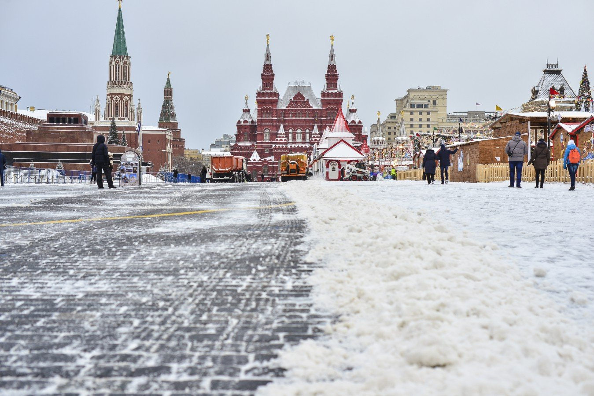
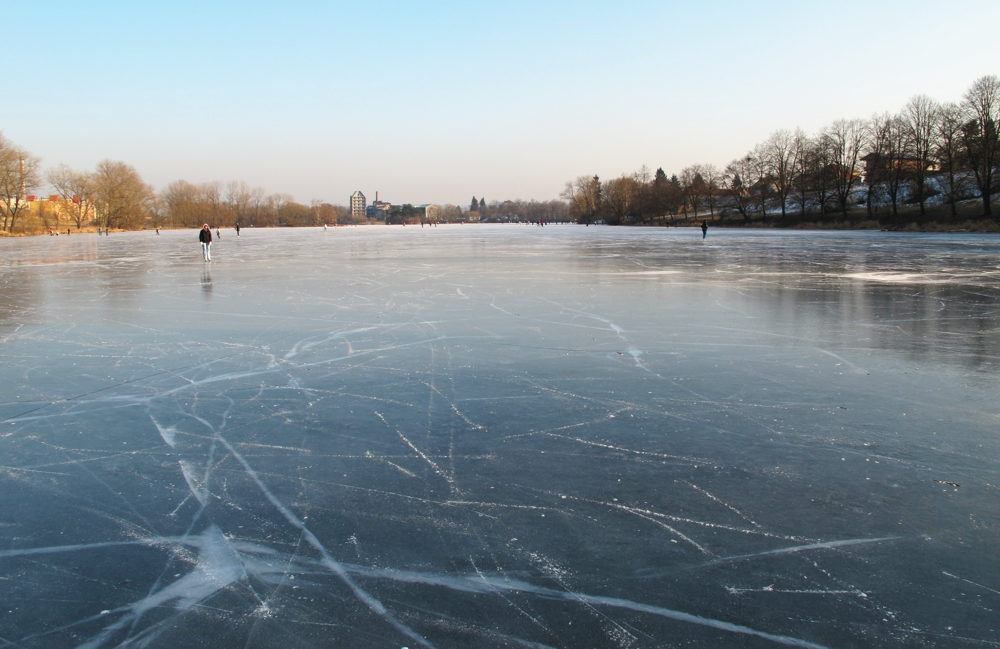

В ближайщие дни Сибирь накроют сильные снегопады.
В столице России в эти дни ожидаются сильные морозы и гололёд после потепления.
Вся уборочная техника срочно приведена к уборке улиц Столицы России.
Новогодние каникулы в Саратове.
Новый год в Саратове.
Следующий праздник намечается Православное Рождество в России.
Православное Рождество Россия.
Лето обязательно наступит.
Лето.